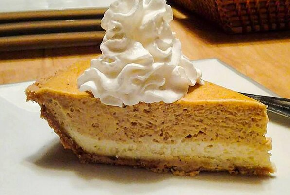

Pumpkin Cheesecake

Love cheesecake, but also want a hit of pumpkin pie? Why not have the best of both with this deliciously smooth Pumpkin Cheesecake!
Ingredient List
- 2 packages (8oz each) of Cream Cheese, softened
- 1/2 cup white sugar
- 1/2 teaspoon vanilla extract
- 2 eggs
- 1 (9 in) prepared graham cracker crust
- 1/2 cup pumpkin puree
- 1/2 teaspoon ground cinnamon
- 1 pinch ground cloves
- 1 pinch groun nutmeg
- Optional, but encouraged: 1/2 cup frozen whipped topping, thawed
Directions to Deliciousness
- Preheat oven to 325 degrees F (165 degrees C)
- In a large bowl; combine cream cheese, suga, and vanilla. Beat until smooth. Blend in eggs one at a time.
- Remove 1 cup of batter, and spread along the bottom of the crust. Set the remaining batter aside.
- With the remaining batter; add the pumpkin, cinnamon, cloves, and nutmeg. Stir gently until fully incorporated. Carefully spread the mixture of the batter already in the crust, forming a second layer of the cheesecake.
- Bake in the fully preheated over for 35 to 40 minutes, or until center is almost set.
- Allow time to cool, then refrigerate for 3 hours or overnight if time allows.
- Cover with whipped topping before serving, and enjoy!